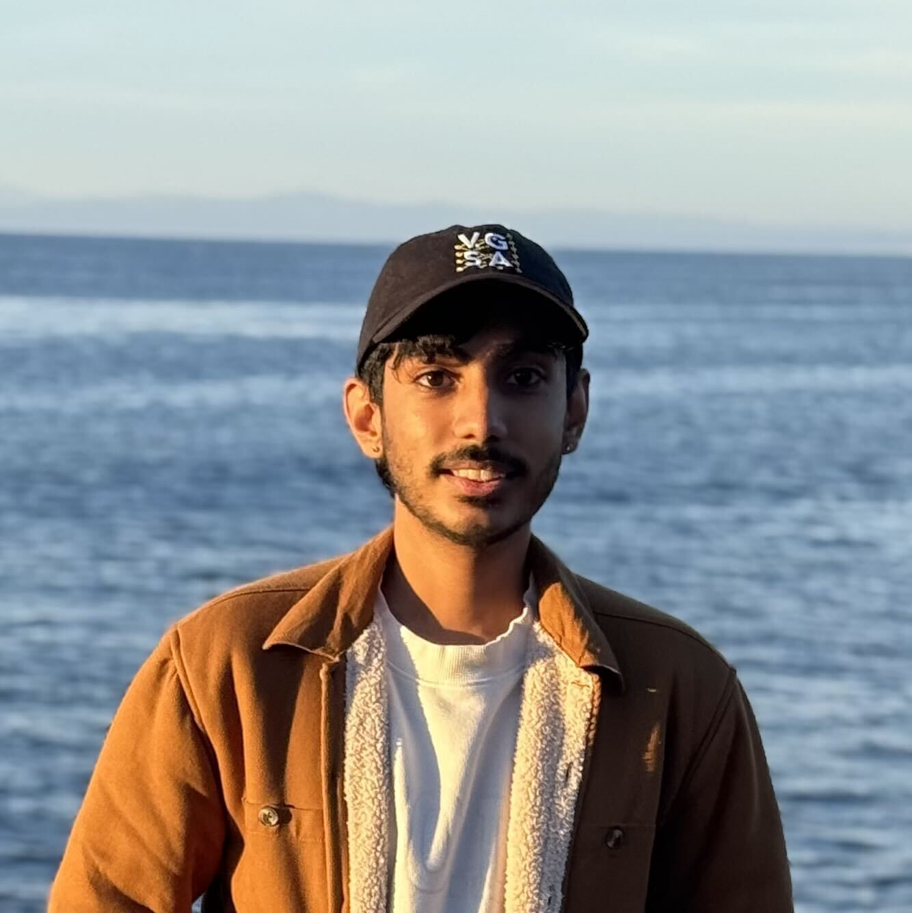

Pranavesh Kumar Talupuri
M.S. Computer Science Student at the University of Southern California
I am a computer science graduate student at USC interested in machine learning, computer vision, differential privacy, 3D scene representation, and efficient representation learning. My recent work spans private and trustworthy machine learning, Gaussian splatting, multimodal retrieval, biomedical image analysis, remote sensing, and vision systems for robotics.
Research Interests
My research interests lie broadly in machine learning and computer vision, with a focus on building efficient, reliable, and privacy-aware learning systems.
- Deep learning
- Private and trustworthy machine learning
- Differential privacy and synthetic data generation
- Computer vision and biomedical image analysis
- 3D scene representation and Gaussian splatting
- Efficient multimodal representation learning
- Vision systems for robotics and remote sensing
Current Research
I am currently a Graduate Research Assistant at USC, working on machine learning and differential privacy research with Prof. Sai Praneeth Karimireddy, in collaboration with Mohammadamin Banayeeanzade and Tony Yang.
Publications
Analysis of Acute Lymphoblastic Leukemia Detection Methods Using Deep Learning
Pranavesh Kumar Talupuri, Beebi Naseeba, Nagendra Panini Challa, Abbaraju Sai Sathwik.
2023 International Conference on Self Sustainable Artificial Intelligence Systems (ICSSAS), 2023.
Smart MCQ Generation using KeyBERT and BERT Based Models
Pranavesh Kumar Talupuri, Manjunaatt Girish Kumar, Kotha Lavanya, Gudditi Chetan, Nagendra Panini Challa.
2024 3rd Edition of IEEE Delhi Section Flagship Conference (DELCON), 2024.
Hybrid Time Series Forecasting with ARIMA, Echo State Networks, and LSTM
Sai Eeshwar D, Pranavesh Kumar Talupuri, Aarush Shivkumar, Beebi Naseeba.
2025 International Conference on Computing Technologies & Data Communication (ICCTDC), 2025.
Comparison of Deep Learning Models for Classification of Acute Lymphoblastic Leukemia
Pranavesh Kumar Talupuri, Nitin Bhimineni, Beebi Naseeba, E. R. Aruna, Sai Vennela Tipirneni, Nagendra Panini Challa.
Pertanika Proceedings, 1(5):93–99, 2025.
DOI: 10.47836/pp.1.5.018
Selected Research Projects
Adaptive Matryoshka Embeddings for Material and Graphics Asset Retrieval
Built an OpenCLIP retrieval pipeline for material, texture, and graphics asset search using nested embeddings, learned projection heads, and coarse-to-fine reranking.
Evaluated memory and latency tradeoffs against CLIP truncation, PCA, and learned projection baselines. 32-dimensional Matryoshka embeddings reduced embedding memory by 93.8% compared to 512-dimensional CLIP while preserving strong retrieval quality.
Efficient 3D Gaussian Splatting for Real-Time Rendering and Reconstruction
Developed a real-time 3D Gaussian splatting pipeline for rendering and scene reconstruction, with adaptive level-of-detail strategies in OpenGL and GLSL.
Achieved 50%–90% frame-rate improvements on benchmark scenes through dynamic pruning and per-frame rendering optimization.
Hybrid 3D/4D Gaussian Splatting for Scene Reconstruction
Created an adaptive hybrid 3D/4D Gaussian splatting framework for blur-aware reconstruction of large-scale dynamic outdoor scenes.
Multi-Decadal Land Use and Land Cover Change Analysis using Google Earth Engine
Developed a cloud-based remote sensing pipeline in Google Earth Engine to classify land use and land cover across 1985, 1995, and 2005 using Landsat, Sentinel, and MODIS imagery.
Engineered spectral and vegetation features including NDVI, NDWI, NDBI, EVI, SAVI, and MSAVI, and compared Random Forest, SVM, CART, and Gradient Tree Boosting classifiers.
Hybrid YOLO and Hough Transform Framework for Rural Road Edge Detection
Developed a vision-based road edge detection framework for unstructured rural roads without painted lane markings. Combined YOLO-based scene object detection with classical Hough transform geometry to identify road boundaries from visual cues.
Circuit Digitization
Developed a system for converting hand-drawn circuit diagrams into digital representations, with applications in educational technology and automated circuit understanding.
Contact
I am interested in research opportunities and PhD programs in deep learning, machine learning, computer vision, privacy, and efficient representation learning.
Email: talupuri@usc.edu
GitHub: github.com/tkprnv
LinkedIn: linkedin.com/in/tkpranav